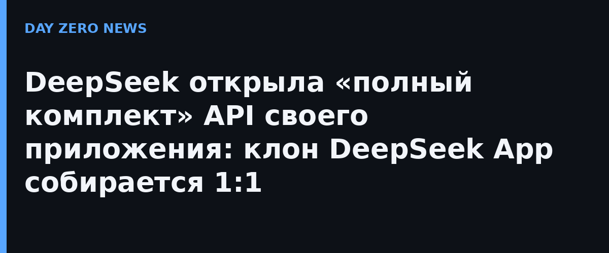

Вечером 13 ноября DeepSeek опубликовала официальное объявление о «полнокомплектном» прикладном API. Суть проста: все интерактивные функции фирменного чат-приложения — поиск в интернете, глубокое размышление со ссылками, загрузка файлов, чтение ссылок, безопасностные проверки — теперь встроены в привычные интерфейсы Messages, Responses и Chat Completions. Модель deepseek-flash (её обслуживает DeepSeek-V4.1-Flash-1017) с включёнными параметрами сама вызывает нужные инструменты, а склейкой контекста занимается сервер.
Открыты пять блоков: веб- и поисковый инструмент deepseek_web_search (в обычном режиме — поиск по вебу и картинкам с цитатами в ответе, в режиме размышления —самостоятельный многоступенчатый поиск с чтением найденного); загрузка PDF, Office и изображений с извлечением текста и разбором картинок; инструмент deepseek_read_url, который сам вытаскивает содержимое ссылок из сообщения; режим безопасности с модерацией входа и выхода; и голосовой контур. Всё это доступно и отдельными эндпоинтами — Search, Fetch, OCR, ASR, TTS — чтобы встраивать в свои конвейеры без целого приложения.
Цены сверх токенов: поиск текста и картинок — 5 юаней за тысячу запросов, вычитывание веб-страниц — 5 юаней за тысячу, распознавание текста — 1,5 юаня за тысячу страниц, распознавание речи — 0,39 юаня за час (временно со скидкой 50%), синтез речи — 1,5 юаня за 10 тысяч знаков. В качестве демонстрации DeepSeek открыла исходники лёгкого фронтенда chat-demo, который повторяет её приложение и умеет импортировать историю бесед из настоящего DeepSeek App.
DeepSeek открыто говорит: её собственный чат-продукт — лишь базовая форма общения с моделью, и компания хочет, чтобы разработчики строили свои. Это прямой вызов OpenAI с её недавно выпущенным ChatGPT Wallet и агентным API: китайская лаборатория снова продаёт не «умную голову», а целый продукт по частям и по себестоимости. Для мелких команд это способ за вечер собрать приложение уровня DeepSeek, не подключая сторонний поиск, OCR и TTS по отдельности.
Официального анонса с цифрами на английском нет — англоязычная документация DeepSeek пока лишь ссылается на гайд по Search/Fetch, поэтому цены и состав функций взяты из китайского объявления на api-docs.deepseek.com.